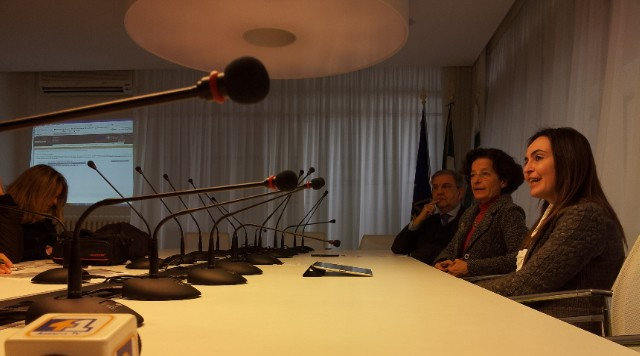

Ieri mattina ho avuto modo di partecipare alla conferenza stampa dell’assessore Angela Barbanente, che assieme alla dirigente del Servizio Assetto del Territorio regionale Francesca Pace, alla presidente Sabrina Sansonetti e al direttore Francesco Saponaro di Innovapuglia e alla responsabile del SIT regionale Tina Caroppo, hanno presentato l’ortofoto 2010 che la Regione Puglia ha acquisito in “riuso” dall’Agenzia per le Erogazioni in Agricoltura (AGEA). In effetti la cessione non è avvenuta a titolo gratuito, l’assessore non ha specificato la somma pagata, pur assicurando si tratti di una cifra “simbolica”.

Riguardo il riuso dei dati tra Pubbliche Amministrazioni, purtroppo la normativa europea e nazionale (se parliamo di dati geografici la Direttiva INSPIRE e il suo D.Lgs. di recepimento) dà facoltà al soggetto detentore di cedere i dati dietro pagamento di un corrispettivo, che dovrebbe ricompensare i costi di produzione e aggiornamento del dato (per approfondimenti a riguardo vi rimando a quest’altro mio articolo).
Le caratteristiche dell’ortofoto AGEA 2010
Fino a poco tempo fa i dati di base della Regione Puglia erano costituiti unicamente dalle ortofoto CGR del 2005 e del 2006, da quest’ultima poi sono state derivate la CTR numerica in scala nominale 1:5.000, e la carta di uso del suolo (in realtà un dato di copertura del suolo), oltre a un DSM a 8 metri, tutti dati dei quali avevo parlato sempre su TANTO in questo articolo.
Questa ortofoto AGEA del 2010 costituisce dunque un importante aggiornamento della base imagery, caratterizzata da scala nominale 1:10.000 e risoluzione a 50 cm, con la differenza sostanziale però che mentre per gli enti locali pugliesi i singoli fotogrammi sono disponibili gratuitamente, per cittadini e imprese è fruibile solo ed esclusivamente mediante servizio WMS (i dettagli li trovate qui), e non è scaricabile liberamente come per i dataset che ho citato prima.
Il servizio WMS che eroga dati raster del SIT Puglia, mette a disposizione due strati relativi alla ortofoto AGEA 2010: uno relativo all’intera copertura regionale, l’altro solo per la fascia costiera (circa 1 km di ampiezza). Le differenze tra i due però sembrano sostanziali, pur essendo riferiti entrambi al 2010 le riprese non coincidono temporalmente, e la definizione del dato costiero è nettamente migliore di quello totale, probabilmente a causa del ricampionamento a seguito di compressione e mosaicatura dei fotogrammi originali nel formato ECW. Potete apprezzare il confronto tra le varie ortofoto nella mappa qui sotto.
Clicca qui per ammirare la mappa a pieno schermo realizzata con Leaflet…
Con licenza parlando…
Il problema del riuso dei dati pubblici è come sappiamo tutti uno dei grossi nodi da sciogliere. Logica vorrebbe che un dato pagato con le tasse dei cittadini, ritorni ad essi senza costi ulteriori, e che se ne possano fare anche usi commerciali, il minimo sindacale dunque sarebbe associarvi una licenza CC BY.
I dati geografici scaricabili dal SIT Puglia (ho scritto un articolo che li annovera in un compendio più ampio) sono sottoposti a due differenti disclaimer (primo e secondo) che ne vietano comunque la cessione a terzi e il riuso a fini commerciali. Insomma, un professionista del territorio (ingegnere, architetto, geologo) non potrebbe a questo punto usare i dati del SIT Puglia per il proprio lavoro. Una evidente contraddizione che ha necessità di essere risolta. In passato, le molte email scambiate con il servizio tecnico del SIT Puglia per ottenere chiarimenti sulla licenza d’uso non hanno portato a nulla.
L’occasione della conferenza stampa è stata dunque per me un’occasione imperdibile per capire direttamente, dall’assessore al ramo e dalla responsabile del SIT Puglia, come interpretare la questione.
Ho dapprima contestualizzato il mio intervento, sottolineando innanzitutto come l’hype sugli open data sia ormai altissimo nell’opinione pubblica italiana, e come molte Pubbliche Amministrazioni stiano abbracciandone la causa, aprendo i propri dati, dando vita a portali dai quali poterli fruire – non ultimo il Governo italiano - e concorsi di idee per il loro sfruttamento, come Apps4Italy. E naturalmente ho ricordato l’esistenza della proposta di legge regionale su open software e open data, che si spera verrà presto portata in consiglio. I nostri interlocutori hanno mostrato di essere ben consapevoli di tutto ciò.
Ho poi domandato con chiarezza se i dati presenti sul SIT Puglia siano (ri)utilizzabili anche a scopi commerciali, ad esempio se un professionista del territorio può impiegarli nelle relazioni tecniche che redige abitualmente per il proprio lavoro. E la risposta è stata più che affermativa. Infatti la Regione, ad esempio nelle procedure per la redazione dei PUG comunali, spinge fortemente affinché i tecnici usino proprio i dati del SIT Puglia. Mi sono sentito a quel punto di rilanciare, chiedendo se i dati regionali possano essere utilizzati da soggetti terzi anche a scopi commerciali, ad esempio realizzando servizi e applicativi destinati a cittadini e imprese. Tante volte abbiamo detto che favorire l’apertura dei dati pubblici costituirebbe un formidabile volano per far ripartire l’economia nazionale. Anche qui ho ottenuto una risposta convintamente positiva.
Ricapitolando, la Regione Puglia è assolutamente convinta ad aprire i propri dati a tutti, rendendoli accessibili e riutilizzabili, ma abbiamo i disclaimer per i dati del SIT Puglia che di fatto ne impediscono l’uso a scopi commerciali. A questo punto va fatta chiarezza una volta per tutte, la Regione dovrebbe adottare una licenza che consenta davvero il riuso, ovvero almeno CC BY.
…nell’attesa che presto anche in Puglia nasca il portale dati.puglia.it
Un grazie speciale a Andrea Borruso, che mi ha indotto a sporcarmi le mani con Leaflet, una strepitosa libreria JS – che ho usato per questo articolo – alla portata di (quasi) tutti per realizzare mappe su web esteticamente belle, molto performanti ed estremamente flessibili.
I contenuti potrebbero non essere più adeguati ai tempi!

By Gimmi Gis on feb 15, 2012
Grande immagine!
By Pietro Blu Giandonato on feb 15, 2012
Ciao Gimmi, ti riferisci alla foto della conferenza stampa o all’ortofoto?
By Andrea Borruso on feb 15, 2012
Quella meno recente e forse di minore dettaglio sembra comunque quella ortorettificata meglio. Almeno nella zona di partenza della mappa che hai creato.
By Pietro Blu Giandonato on feb 15, 2012
Si, in quella zona la ortofoto del 2005 è quella più nadirale, ma dipende certamente dalle condizioni di ripresa.
By Crono on feb 17, 2012
Ciao, eccomi qui. Innanzitutto bellissimo sito e poi lo strumento di implementazione che hai usato su è fantastico…fluidissimo poi, riesce a gestire quei 4 livelli in maniera incredibile…
Tornando on topic, stavo cercando di capire se io cittadino posso accedere alle ultime ortofoto 2010 ma sul sito sit.puglia.it ho trovato un .doc che dice esplicitamente che l’accesso è consentito solo a enti pubblici…
vedo comunque che la qualità è la stessa del 2005..mah!
By Crono on feb 17, 2012
ho già visitato il sito del sit e aperto il pdf con le istruzioni per usare i wms ma comunque non ho capito come costruire il wms che mi interessa.
Comunque io utilizzo gli strumenti cartografici per “hobby”, mi sono utili sia per le mie attività di trekking/speleologia/ricerche varie sul mio territorio che nell’ambito dello studio (ancora poco) del mio corso di scienze del turismo. Questo per farti capire che non sono un utente avanzato…
ho provato l’app Geopaparazzi ma credo che sia troppo per me, insomma è più dedicata all’uso professionale
By Pietro Blu Giandonato on feb 17, 2012
Ciao Domenico, grazie dell’apprezzamento.
Le ortofoto 2010 sono accessibili – come spiegavo nell’articolo – solo mediante WMS per il pubblico, mentre agli enti locali vengono ceduti gratuitamente.
Riguardo le modalità per usare il servizio WMS, sempre nell’articolo rimandavo all’apposita pagine della Regione, che comunque ti riporto anche qui.
La qualità, come specificavo ancora nel post, del dato con copertura regionale 2010 è paragonabile a quella 2006 e 2005 e non sembra eccellente perché purtroppo si tratta di una immagine ECW, un formato compresso e ricampionato dall’originale.
Ribadisco comunque che il dato costiero 2010 (a differenza di quello totale) è molto molto migliore, con un’ottima risoluzione, ti invito a usarlo in un GIS desktop e fare i debiti confronti. Purtroppo Leaflet, come molte applicazioni di mappa web, consentono livelli di zoom non molto spinti.
Spero di aver chiarito i tuoi dubbi.
By Pietro Blu Giandonato on feb 17, 2012
I WMS erogati dal SIT Puglia mettono a disposizione solo i layer che ci trovi dentro, non altri. Purtroppo non puoi costruire il WMS che ti interessa, se con questo intendi poterti “costruire” una mappa con i layer che vuoi e fruirla ad esempio in un GIS desktop.
Il sit.puglia.it – una volta che ti sarai registrato – ti consente però di navigare i dati che mette a disposizione direttamente nel browser web (molti lo chiamano “webgis”).
Riguardo Geopaparazzi non desistere, è invece un’app nata anche per chi fa trekking. Usala, e se hai dubbi o problemi torna qui e chiedi tutto ciò che vuoi commentando l’articolo che lo presenta. Il suo sviluppatore è uno di noi TANTI.
A presto e grazie per i commenti.
By Crono on feb 17, 2012
ho capito, quindi non posso caricare l’ecw online su arcgis o ermapper…
sono già registrato sul sito del sit comunque
riguardo a geopaparazzi cosa mi offre in più rispetto a oruxmaps nell’attività di trekking?i waypoint posso inserirli anche li e segnare aree sulla mappa non credo che mi possa servire…
By Pietro Blu Giandonato on feb 17, 2012
Domenico, ci stiamo un pò incartando: se con “ecw online” intendi l’ortofoto, puoi caricarla tranquillamente come WMS in qualunque GIS desktop, come anche ArcGIS, basta che utilizzi l’apposito link http://iws.sit.puglia.it/ecwp/ecw_wms.dll?
La registrazione al SIT Puglia è necessaria solo per la consultazione della cartografia via web e per il download dei dati, non per l’uso dei servizi WMS.
By Italo on feb 17, 2012
Complimenti Pietro!, sempre al passo con i tempi, anzi anche di più …
Bella leaflet, anche se ancora nn ci ho messo in pratica le mani su.
E molto bella questa tua implementazione con le ortofoto pugliesi.
Pulita, efficace … efficiente.
Ulteriore prova provata di quanto la creatività e l’opensource usati bene possano ben competere con budget (spesso faraonici) destinati a fare + o – meno le stesse cose …
Ma a latere mi chiedevo: sarebbe possibile integrare la tua app con una ricerca territoriale?. Ad esempio con la libreria Places di Google o qcs altro del genere. Quesito strampalato? Abbraccio …
By Pietro Blu Giandonato on feb 17, 2012
Grazie molte Italo…
come ho scritto alla fine dell’articolo, è Andrea Borruso che mi ha suggerito di usare Leaflet. Io avevo creato la “solita” mappetta incorporabile con OpenLayers, ma il livello di zoom era troppo basso per poter apprezzare le differenze tra una ortofoto e l’altra.
Per me è stata quindi un’occasione per provare questo formidabile framework . La documentazione disponibile è estremamente chiara (qui l’esempio che Andrea ha usato e io ho poi perfezionato) e consente in pochissimo tempo di costruire mappe pubblicabili su web.
Riguardo la possibilità di cercare luoghi, nella documentazione non mi è parso di trovare elementi utili, e non ho idea di come Leaflet possa “parlare” con Google Places o altri servizi analoghi. Ma la forza dell’open source sta proprio in questo, nulla impedisce a qualcuno di farlo
Grazie come sempre per aver lasciato un tuo commento, un caro saluto.
By mariano starace on feb 19, 2012
ciao Andrea
sono arrivato sul tuo blog cercando informazioni sulle ortofoto Agea 2010 per la Regione Puglia. Poiché ho la fortuna di averne qualcuna, ho notato che dopo aver scaricato le WMS (e portate in WGS 84), le foto da me in possesso non “coincidono” perfettamente con lo shape (un oggetto della foto si colloca all’incirca 1 cm. più giù – misura a monitor – del corrispondente oggetto sullo shape); le ortofoto del 2006 invece corrispondono. So già che è un problema di “sistemazione” delle coordinate, tant’è che arcmap mi avvisa (geographic coordinate system warning) che la mia foto .ecw ha differenti coordinate (sorgente: Monte Mario) e qui sorge il problema. Io non sono uno smanettone di GIS e conosco di arcmap quelle poche funzioni che mi sono utili per l’escursionismo, per cui ti chiedo …: quando esce quell’avviso chiedendomi di convertire da Monte Mario a WGS 84 e di inserire dei valori in metri agli assi X Y Z (geocentric translation?) quali sono questi valori?
By Pietro Blu Giandonato on feb 20, 2012
Ciao Mariano,
il tuo è un classico problema di riproiezione al volo di dati con CRS differenti. Ovviamente il centimetro di spostamento di cui parli è in relazione alla scala di visualizzazione a schermo che hai impostato, dunque assolutamente relativo ad essa.
Se vuoi sovrapporre correttamente un dato EPSG:3004 (c.d. Gauss-Boaga) e uno EPSG:32633 o EPSG:4326 (c.d. WGS 84 metrico o geografico) è necessario impostare la trasformazione corretta tra un CRS e l’altro. Mi pare di capire che lavori con ArcGIS, per fare questo, nella finestra delle proprietà dei Layers in ArcMap, nel tab “Coordinate System” cliccando il pulsante “Transformations” avrai la possibilità di scegliere appunto la trasformazione adatta alla Puglia (e in genere all’Italia continentale) dal menu a tendina “Monte_Mario_To_WGS_1984_4″. Noterai che si tratta di una trasformazione a 7 parametri dx=-104.1 dy=-49.1 dz=-9.9 rx=0.971 ry=-2.917 rz=0.714 s=-11.68
Spero di esserti stato d’aiuto.
Ciao,
Pietro
By mariano starace on feb 21, 2012
ciao Andrea
ho fatto come hai detto e devo dire che il gap si è notevolmente ridotto, ma ancora c’è una piccola differenza (calcolata sempre a monitor) tra l’ortofoto e lo shape.
ancora grazie
mariano
By Pietro Blu Giandonato on feb 21, 2012
Sei certo i dati siano in EPSG:3004 (Monte Mario Roma 40 fuso est) e EPSG:32633 (WGS 84 UTM 33N)? Magari se specifichi precisamente di che dati si tratta, posso capire quali CRS li caratterizza.
Puoi specificare poi di quanti metri è lo spostamento che hai tra di essi, usando lo strumento di misura di ArcMap?
Ciao, )
)
Pietro (amico di Andrea
By Crono on feb 21, 2012
hmm…ma come apro questo link in arcgis?!
By Pietro Blu Giandonato on feb 22, 2012
Puoi usare il link per creare una nuova connessione “Add WMS Server” con ArcCatalog. Da quel momento in poi potrai aggiungere in ArcMap tutti i layer che il server eroga.
Dai un’occhiata a questa immagine
By Crono on feb 22, 2012
grazie, ho fatto (non riesco a risponderti su)
By Mario Tragn on mar 24, 2012
Pietro, non posso essere da meno rispetto a tutti gli altri … sei davvero avanti sia con i contenuti che con la tecnologia; molto bello il Leaflet !
Simpaticamente però non sono d’accordo sulla questione del confronto delle 2 ortofoto 2010 (costiero e globale). Dai confronti fatti da me direttamente sul leaflet a me sembra tutto un problema di qualità a monte. La compressione non dovrebbe essere resposabile a meno che erroneamente sia stato scelto un fattore di compressione superiore a 50 volte (lo ritengo cmq improbabile).
Da cosa nasce la tua deduzione ? Sono curioso di capire, magari mi manca qualche elemento.
Ciao
By Pietro Blu Giandonato on mar 24, 2012
Grazie per i complimenti Mario, che condivido comunque almeno con Andrea che mi ha fatto conoscere Leaflet.
Le valutazioni sulla qualità delle ortofoto le ho fatte unicamente basandomi sul loro confronto visivo, non ho altri mezzi in mancanza di metadati
C’è da dire comunque che con Leaflet direttamente nella pagina web il livello di zoom non consente di apprezzare come si deve la differenza di qualità delle due ortofoto, ti invito ad analizzarle con un GIS desktop impostando i relativi servizi WMS.
By GimmiGIS on mar 11, 2014
Ciao Pietro,
Rileggendo questa discussione vedo solo ora che non ti ho risposto.
Intendevo naturalmente l’immagine GIS incorporata nell’articolo.
Volevo poi capire se ci sono state novità sul tema principale dell’articolo: Regione Puglia ha poi modificato la licenza dei suoi dati?
Dopo due anni sarebbe proprio bello poter ri-utilizzare questi bellissimi dati.
Grazie e buona giornata!
Gimmi
By Pietro Blu Giandonato on mar 12, 2014
Ciao Gimmi,
ho dato una breve notizia riguardo il recente restyling del SIT Puglia su AlterGeo (http://bit.ly/Nzb05c) ma non è ancora stata fatta chiarezza riguardo le licenze d’uso dei geodati pugliesi.
Anzi, è sparita ogni traccia anche dei precedenti disclaimer che l’utente accettava all’atto del download.
Peccato.
By GimmiGIS on mar 12, 2014
Ciao Pietro, grazie
Peccato, si perdono una bella occasione per farsi pubblicità.
Sto preparando una iniziativa di utilizzo dei dati geografici Open, userò quelli della Toscana, che sono ufficialmente Open, con tanto di licenza Creative Commons chiaramente indicata, e scaricata in PDF insieme ai dati.
Fatevi valere anche in Puglia!
Gimmi